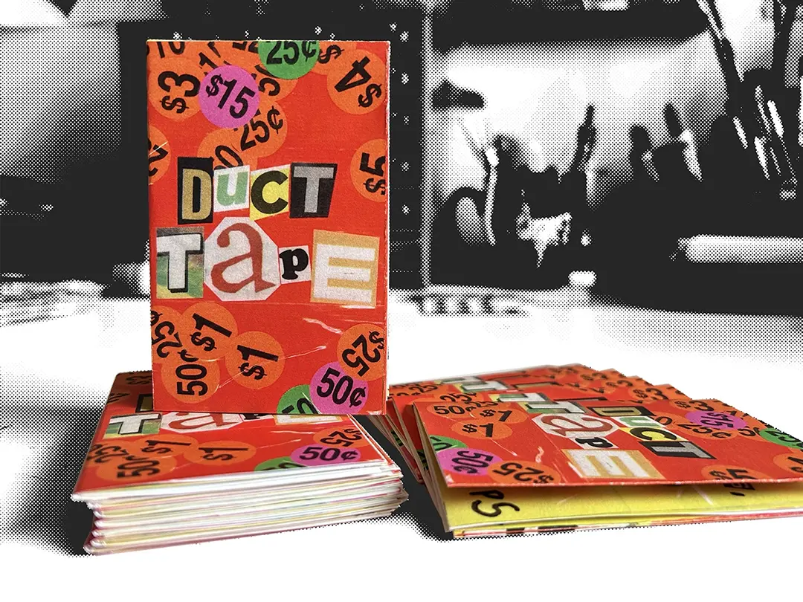
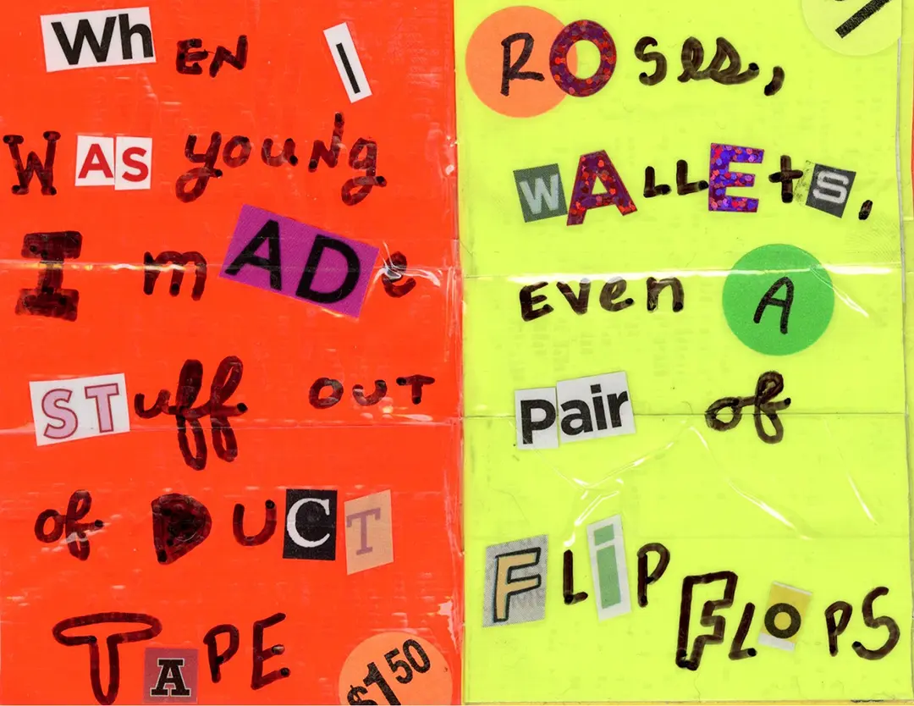
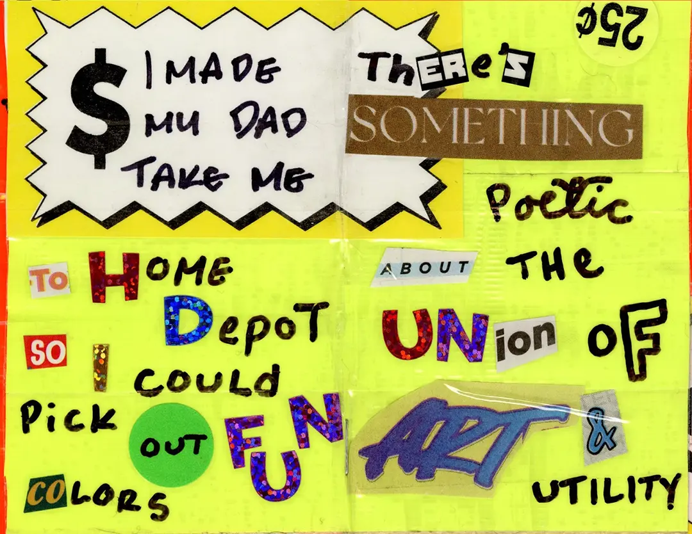
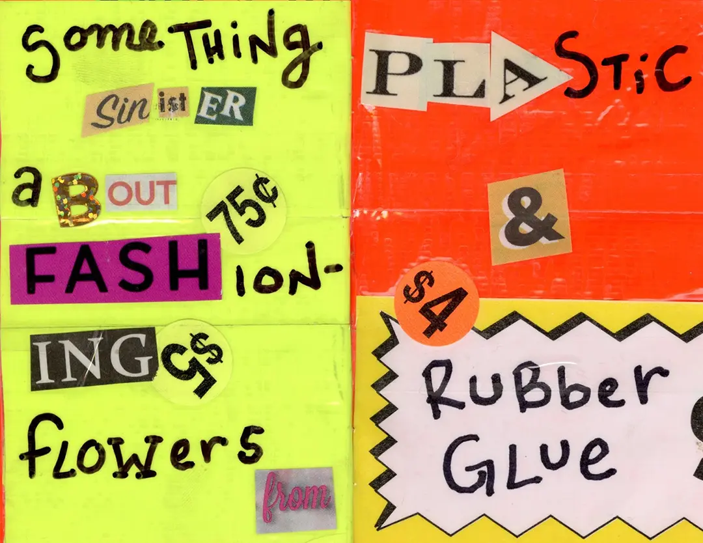
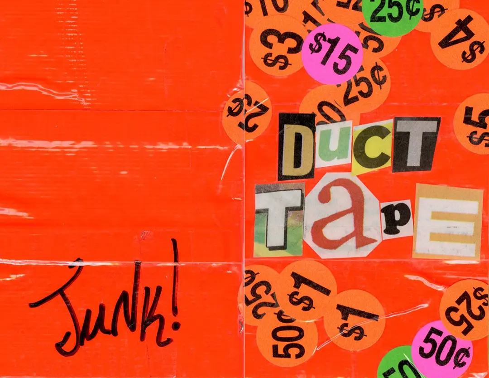

Duct Tape

When I was young I made stuff out of duct tape. Roses, wallets, even a pair of flip flops.

I made my dad take me to home depot so I could pick out fun colors. There's something poetic about the union of art & utility.

Something sinister about fashioning flowers from plastic & rubber glue.


Download a printable copy of the zine
February 2023